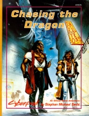

|  | Technical data |
| Scenario for the role-playing game Cyberpunk 2020, published by Atlas Games (1992) | |
| Theme | Manhunt scenario taking place in the combat zones of Night City |
| Background quality | 3 / 5 |
| Scenario quality | 2 / 5 |
| Rules quality | - |
| Artworks quality | 2 / 5 |
| Writing quality | 2 / 5 |
In terms of the criticism of this book, most of the grievances against Night City Stories are again true. The maquette and illustrations are emetic, the story skeletal and just a pretext for a quasi-linear investigation punctuated by fights. Yet I have a certain tenderness for this scenario (maybe because it was one of my first purchases), which in my opinion has the quality to propose interesting starting points. For example, the GM can decide to flesh out the (non-existent) background of the combat zone, the gangs, the personalities of different NPCs, and change a few details here and there. With some effort, this scenario can become an exciting campaign.
{kind=link}